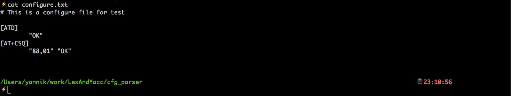
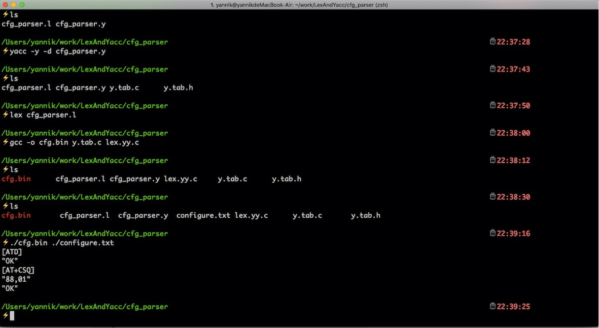

Lex&Yacc Introduction
Table of Contents
1 Introduction
Lex is a lexical analyzer and is used to break up the input stream into useful elements, and Yacc(also stands for Yet Another Compiler Compiler), given a grammar, generates a parser for it. When both tools are properly used, these tools allow you to parse complex languages and configure file with ease, just as the following example.
2 An example
here we use lex and yacc to parse the following configure file, you can find that it is so convenient to parse a configure file with these tools.
2.1 Configure File

2.2 Lex source file
%{
#include <stdlib.h>
#include "y.tab.h"
void yyerror(char *);
%}
%%
\[[^\n]+\] {
yylval.string = yytext;
return ATCMD;
}
\"[^\n\"]+\" {
yylval.string = yytext;
return RESULT_CODE;
}
[\[\]] {
return *yytext;
}
\#[^\n]* ; /* ignore comment line */
[ \t\n]+ ; /* ignore whitespace */
. yyerror("Unknown character");
%%
int yywrap(void) {
return 1;
}
2.3 Yacc source file
%{
#include <stdio.h>
#include <stdlib.h>
#include <stdarg.h>
/* prototypes */
int yylex(void);
void yyerror(char *s);
extern FILE *yyin;
%}
%union {
int number; /* integer value */
char *string; /* string value */
}
%token <number> NUMBER
%token <string> STRING
%token ATCMD RESULT_CODE
%%
parameters:
| parameters parameter
;
parameter:
atcmd
|
result_code
;
atcmd:
ATCMD { printf("%s\n", yylval.string); }
;
result_code:
RESULT_CODE {printf("%s\n", yylval.string);}
;
%%
void yyerror(char *s) {
fprintf(stdout, "%s\n", s);
}
int main(int argc, char **argv) {
if (argc > 1) {
yyin = fopen(argv[1], "r");
}
else {
fprintf(stdout, "Usage: config <file_path>\n");
return -1;
}
if (yyin == NULL) {
fprintf(stdout, "Error: file open error...\n");
return -1;
}
yyparse();
fclose(yyin);
return 0;
}
3 Build&Run
